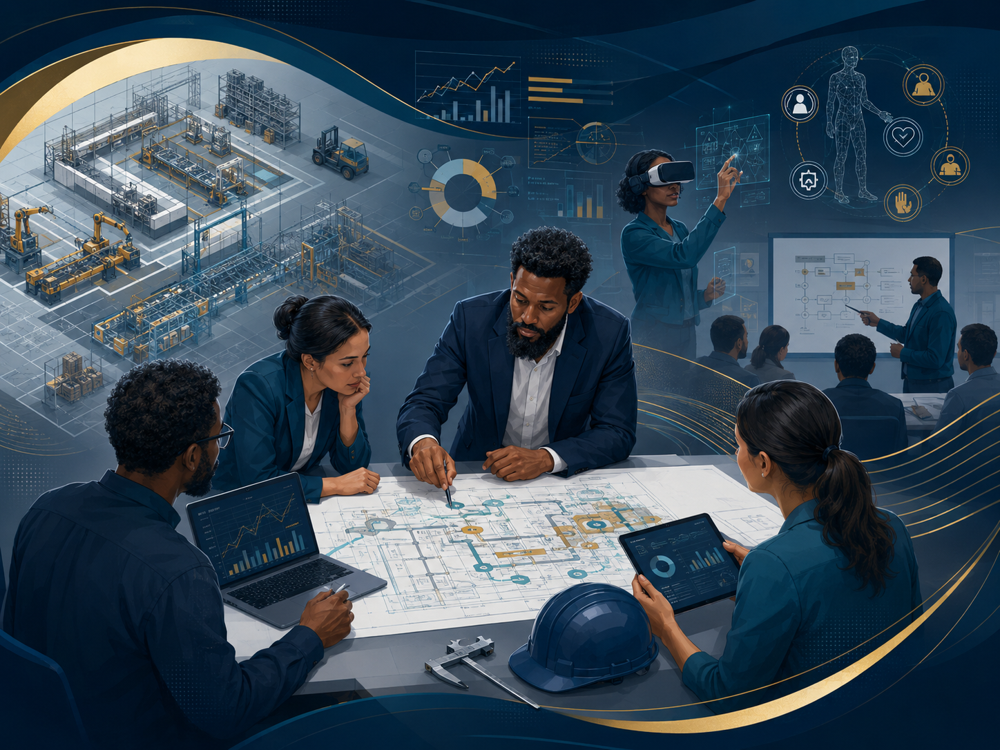

Industrial Engineering • Industry 5.0 • Ergonomics • VR/AR/XR
Dr. Betsha Tizazu Abreham
Assistant Professor, researcher, trainer, and industry-oriented academic working at the intersection of industrial engineering, human-centered manufacturing, ergonomics, production systems, and immersive technologies.
10+ Years
Teaching & postgraduate supervision
66
Google Scholar citations
Industry 5.0
Human-centered digital transformation
Human-Centered Engineering
Industry 5.0 • XR • Ergonomics
Academic & Industry Impact
Connecting research, teaching, and practical industrial transformation.
This platform presents Dr. Betsha's academic profile, research contribution, industry engagement, consulting experience, and future-facing work on human-centered Industry 5.0 systems.
About
Human-centered engineering for resilient and intelligent industrial systems.
Dr. Betsha Tizazu Abreham is an Assistant Professor and researcher with expertise in Industrial Engineering, Industrial Management, Production Systems Engineering, ergonomics, human factors, and immersive interaction technologies. His work combines academic rigor with real-world industrial relevance.
His scholarly focus spans Industry 5.0, human-machine interaction, ergonomic design evaluation, direct interaction performance in virtual environments, sustainable industrial systems, supply chain improvement, product design, maintenance systems, productivity improvement, and manufacturing optimization.
He has also contributed to applied industry projects, professional training, and consulting initiatives in facility planning, Kaizen implementation, process design, occupational safety, productivity improvement, and cost control.
Academic Role
Assistant Professor, Industrial Engineering / Production Systems Engineering
Institution
Faculty of Mechanical and Industrial Engineering, Bahir Dar University
Special Focus
Industry 5.0, ergonomics, VR/AR/XR, industrial systems improvement, and human-centered innovation
Profile Snapshot
Key strengths and achievements
A concise overview drawn from the current CV and academic record.
★
Research Profile
Published in Virtual Reality, Applied Sciences, International Journal of Industrial Ergonomics, and maintenance/manufacturing outlets.
✓
Grant Achievement
Secured a USD 5,000 project to develop anthropometric standards for Bahir Dar city adult men for clothing design.
∞
Academic Leadership
Production Systems Engineering Chair Holder and Academic Program Officer with curriculum development and coordination experience.
⎈
Teaching & Supervision
More than ten years of university teaching and postgraduate supervision in Industrial Engineering and Industrial Management.
⊕
Conference Service
Session chair, reviewer, and technical programme contributor for EAI ICAST and related academic events.
♢
Recognition
NTUST PhD scholarship recipient, research scholar awardee, and recognized for outstanding institutional service in 2023.
Research
Research interests and collaboration themes
Selected themes representing current work and future research directions.
▣
Industrial Engineering & Management
Industrial decision-making, operations management, productivity analysis, cost control, and integrated systems improvement.
◇
Production Systems Engineering
Facility design, process optimization, maintenance systems, plant layout, performance improvement, and industrial operations.
◉
Ergonomics & Human Factors
Work-system design, occupational biomechanics, anthropometric applications, safety, usability, and human performance evaluation.
⌘
VR / AR / XR Interaction
Head-mounted displays, stereoscopic displays, direct reaching tasks, immersive interaction, and user experience studies.
✦
Industry 5.0 & Human-Centred Innovation
Human-centered digital transformation, human-robot collaboration, resilience, sustainability, and worker-focused industrial design.
↗
Supply Chain, Manufacturing & Product Design
Sustainable supply chains, textile and apparel systems, product development, design thinking, and manufacturing improvement.
Scholarship
Selected publications
This list can be expanded further with the complete, up-to-date Google Scholar record.
Stochastic-based failure modeling of air jet loom machine
Journal of Quality in Maintenance Engineering. Research on maintenance reliability and failure modelling in textile manufacturing systems.
View publicationRetaining Talent in Ethiopia’s Booming Textile Industry: Key Drivers and Proposed Strategies
Book chapter / proceedings contribution focused on industrial workforce sustainability and retention strategies.
Available on requestKinematics of direct reaching in head-mounted and stereoscopic widescreen virtual environments
Virtual Reality. Study on interaction performance and movement kinematics in immersive and stereoscopic display systems.
View publicationExocentric Distance Judgment and Accuracy of Head-Mounted and Stereoscopic Widescreen Displays in Frontal Planes
Applied Sciences. Work on virtual display systems, distance judgment, and pointing accuracy in immersive environments.
View publicationEffects of displays on a direct reaching task: A comparative study of head-mounted display and stereoscopic widescreen display
International Journal of Industrial Ergonomics. Comparative study of display technologies and human task performance.
View publicationDeveloping Anthropometric Standards for Ethiopian Clothing Design
Research contribution extending local anthropometric data for design applications and garment industry needs.
Available on requestAnthropometric data of Bahir Dar City’s adult men for clothing design
Anthropometric research supporting local sizing standards and human-centered clothing design applications.
View publicationTeaching
Courses, supervision, and academic contribution
More than ten years of university teaching and postgraduate supervision in Industrial Engineering and Industrial Management.
Production and Operation Management
Food Supply Chain Management
Green Supply Chain Management
Production Costing and Control
Advanced Facility Design
Ergonomics and Work Study
Product Design and Development
Industrial Engineering Research Methods
Manufacturing Systems
Simulation
Plant Layout
Entrepreneurship
Selected supervision themes
MSc thesis supervision includes ergonomic risk assessment, human-machine collaborative manufacturing, maintenance strategy selection, sustainable supply chain management, ERP readiness, quality control, dry port performance, and TPM implementation barriers.
Projects
Research and project portfolio themes
Representative directions for funded projects, collaborative initiatives, supervision, and proposal development.
VR-Based Human Performance Evaluation
Research on distance judgment, reaching accuracy, and display effects in immersive and stereoscopic environments.
Anthropometric Design for Ethiopian Users
Development of local anthropometric standards for clothing design and human-centered engineering applications.
Maintenance, Reliability & Industrial Performance
Applied work on maintenance strategy, failure modelling, process improvement, and operational performance in manufacturing settings.
Textile, Apparel & Sustainable Industrial Systems
Research and development related to inventory systems, productivity, workforce retention, and sustainable supply chain performance.
Consulting Experience
Industry engagement, training, and practice-based impact
Applied consulting, training, and service projects that connect academic expertise with industrial and organizational practice.
Potato flour processing plant facility planning and design
Facility planning and design support for a food processing plant project.
January–February 2023Kaizen implementation training
Training delivered for Bahir Dar civil service bureaus on continuous improvement and workplace efficiency.
June–July 2023Production costing and cost control training
Professional training for Ethio-Engineering Group focused on costing methods and control systems.
March–August 2022Sawmill machine layout, material handling, and OSH manual preparation
Consulting and training support with GIZ / GFA on layout, handling systems, and occupational safety and health.
August 2023–June 2024Production Process Design and Analysis training
Applied industry training for Ethio-Engineering Group in process design and analysis.
June 2023–June 2024SCORE hands-on implementation training
Implementation-oriented training delivered in collaboration with the ILO.
June 2023–June 2024
News & Updates
Latest academic and professional updates
Use this section to share new publications, conference participation, training activities, awards, and collaboration announcements.
MSCA Postdoctoral Fellowship profile development
Current profile prepared around human-centered manufacturing, Industry 5.0, ergonomics, VR/AR-based work-system design, and digital transformation of industrial systems.
Collaboration inquiryConference presentations and applied industrial engineering research
Recent conference contributions include injection molding optimization, dry port performance assessment, and electric vehicle routing for perishable product delivery.
Industry engagement and training activities
Training and consulting work continued in process design, SCORE implementation, sawmill layout, material handling, and occupational safety and health.
Blog & Insights
Thought leadership slot
A dedicated space for short articles, research reflections, teaching notes, and professional insights on industrial engineering, Industry 5.0, ergonomics, XR, and manufacturing improvement.
Why Industry 5.0 must be human-centered
A future article can discuss how ergonomics, human factors, digital tools, and worker-centered design can make industrial transformation more resilient, ethical, and productive.
Suggest a topicUsing VR/AR/XR to evaluate work-system design
Placeholder for a short post on immersive environments, direct reaching tasks, and human performance measurement.
Kaizen, productivity, and practical improvement
Placeholder for lessons from industry training, process design, and manufacturing improvement projects.
Service & Leadership
Academic leadership, service, and professional contribution
Examples of institutional, scholarly, and community-facing roles.
Leadership Roles
- Production Systems Engineering Chair Holder, Bahir Dar University
- Academic Program Officer, Faculty of Mechanical and Industrial Engineering
- Chairman of Bahir Dar Institute of Technology 60th-year anniversary committee
Scholarly Service
- Parallel session chair for Advancements in Manufacturing and Mechanization Systems at EAI ICAST 2024
- Reviewer of conference manuscripts for EAI ICAST 2022, 2023, and 2024
- TPC / organizing roles including ICAST 2014 and ICAST 2021
Awards & Recognition
- NTUST PhD scholarship, 2016–2020
- NTUST three-month research scholar award, 2019
- Certificate of Recognition for outstanding contribution, 2023
- Certificate as independent national expert/trainer for GFA / GIZ, 2024
Contact
Open to research collaboration, academic networking, consulting, and training opportunities.
For research collaboration, industry engagement, project partnership, academic invitations, supervision, or professional communication, please use the links below.